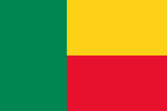

Ulrich Elfried Tonami ASSAN | WDD 130

Welcome to my personal website! My name is Ulrich Elfried Tonami ASSAN.
I am from the Republic of Benin, and I live in the city of Bohicon.
But my native city is Zogbodomey, located in the Zou Department of Benin.
I am a student at Brigham Young University (BYU).
I am currently enrolled in the WDD 130 course, where I am learning about web development.
My country |BENIN REPUBLIC

Welcome to Benin – Land of Heritage and Modern Progress
Benin is a dynamic West African country, rich in history, culture, and natural beauty. It is bordered by Togo to the west,
Nigeria to the east, Burkina Faso and Niger to the north, and the Atlantic Ocean to the south.
📍 Key Facts
Administrative Capital: Porto-Novo
Economic Capital: Cotonou
Historical Capital: Abomey
Official Language: French
Currency: CFA Franc (XOF)
Population: Approximately 12 million
Country Code: +229
Area: 112,622 km²
Time Zone: WAT (UTC+1)
🏛️ A Country of Culture and Legacy
Benin proudly preserves its rich cultural heritage through its cities and monuments. Some of the country’s iconic landmarks include:
The Statue of King Béhanzin in Abomey: The statue of King Béhanzin, a symbol of resistance against colonialism,
stands tall in the heart of Abomey, the historical capital of Benin.
The Statue of Toffa I in Porto-Novo
: A tribute to the first king of Porto-Novo, Toffa I, who played a significant role in the city’s history.
The majestic Amazon Statue in Cotonou – nearly 30 meters tall, built from precious materials to honor the legendary female warriors of Dahomey.
It is one of the most visited monuments in the country today.
🌍 Ouidah – A City of Memory
Among Benin’s most admired cities is Ouidah, known for its powerful history and spiritual heritage. It is home to:
The Door of No Return: a symbolic memorial dedicated to enslaved people deported to the Americas, marking the pain
of a final departure from their homeland.
The Temple of Pythons: a sacred Vodoun site and a major tourist attraction, visited daily by curious travelers and spiritual seekers.
🚀 A Nation on the Rise
Benin is not only a land of traditions, but also a country embracing modernity. In recent years, the nation has made significant strides in:
Infrastructure development (roads, airports, urban sanitation)
Tourism (heritage site restoration, hospitality industry upgrades)
Agriculture (agricultural modernization, sustainable practices)
Energy (renewable energy projects, electrification initiatives)
Digital transformation (e-governance, tech hubs, fiber optic expansion)
Education and entrepreneurship (investment in education, support for startups)
These efforts are reshaping the country’s image and positioning Benin as a new hub for innovation, investment,
and sustainable growth in West Africa.
🏞️ Nature and Biodiversity
Benin is blessed with diverse ecosystems, from lush forests to savannahs and wetlands. The country is home to several national parks and reserves, including:
Pendjari National Park: A UNESCO Biosphere Reserve, known for its rich wildlife, including elephants, lions, and various bird species.
W National Park: A transboundary park shared with Burkina Faso and Niger, famous for its biodiversity and unique landscapes.
Lake Nokoué: A large lagoon known for its fishing communities and rich biodiversity, including the endangered manatee.
🌊 Coastal Beauty
Benin’s coastline along the Atlantic Ocean offers stunning beaches and vibrant fishing villages. Popular beach destinations include:
Grand Popo: A charming coastal town known for its beautiful beaches, traditional fishing culture, and vibrant nightlife.
Ouidah Beach: A serene beach with historical significance, where visitors can relax and learn about the region’s past.
Cotonou Beach: A lively beach area with restaurants, bars, and water sports activities.
🏛️ Cultural Festivals
Benin hosts numerous cultural festivals throughout the year, celebrating its rich traditions and heritage. Some notable festivals include:
The Voodoo Festival: Celebrated in Ouidah, this festival showcases the country’s Vodoun culture with rituals, music, and dance.
🧭 Discover Benin Today
Benin is a country of contrasts, where ancient traditions coexist with modern aspirations. From the vibrant markets of Cotonou to the serene landscapes of Pendjari National Park, Benin invites you to explore its rich tapestry of culture and nature.
The Festival of the Amazons: A celebration of the legendary
Whether you're drawn by its royal history, sacred sites, or its promising future, Benin offers a unique experience where authenticity meets ambition.
Plan your visit. Explore our heritage. Witness our transformation.